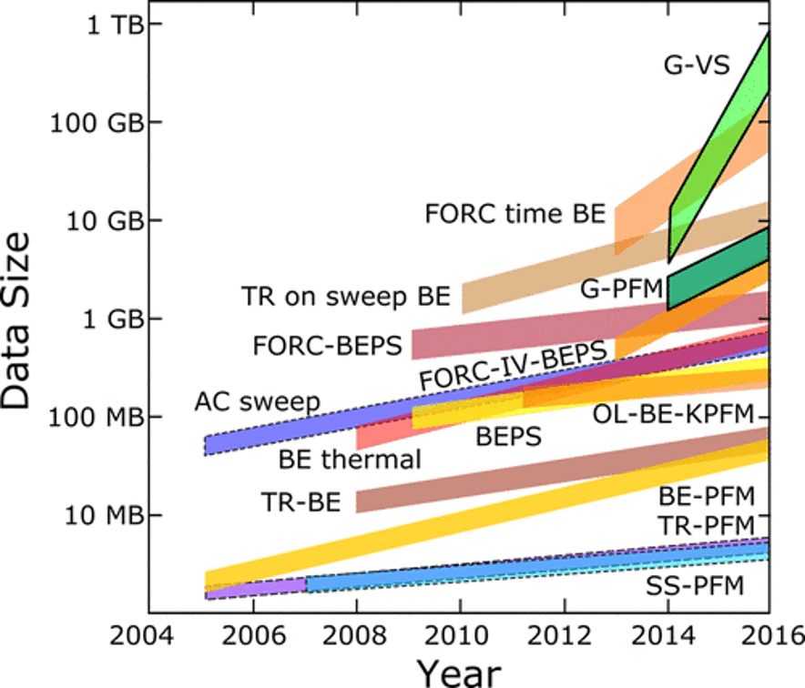
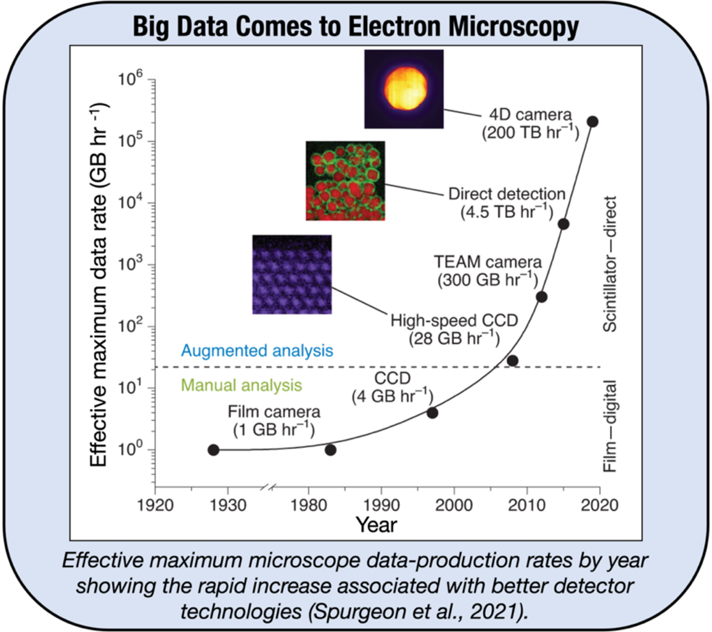
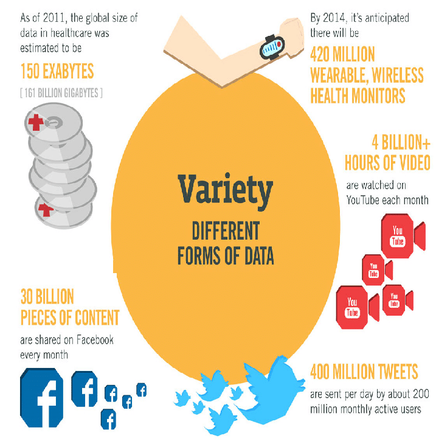
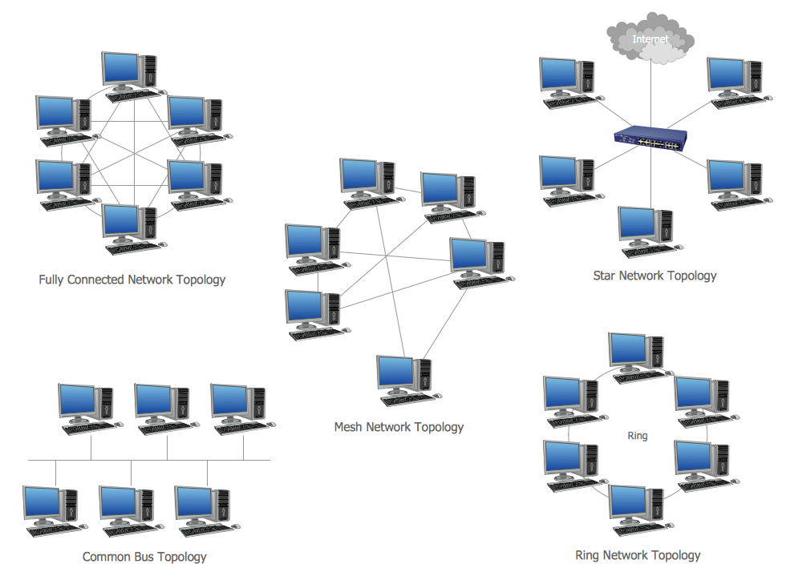
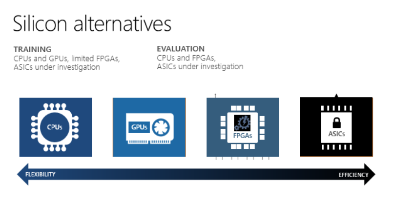

Challenges in Data Analysis
Contents
Challenges in Data Analysis#
The reason why this course is so important is because there are many challenges in practical data analysis
The 4 V’s of Data Analysis#
Volume - Data being generated can be very large. Single TB size experiments are not uncommon.
Velocity - Data is being generated at high velocities. Fast and high resolution sensors mean data can be collected at >1 Gbps, up to 400 Gbps.
Variety - Internet-of-Things is increasing the number of disparate sources of data. It is not uncommon to combine data from many sensors and data types together.
Veracity - Data has uncertainty this could be noise, poor data acquisition, ect. It is important to understand the uncertainty.
Volume of Data#
Most companies have at least 100 TBs of data stored
Cost and complexity of data storage and infrastructure is problematic
For high-availability storage AWS pricing is $23.00/TB-Month
Cold storage $1/TB-month N.B. This does not include the cost of data transfers
Moving large data creates challenges for networking infrastructure.
Standard high-speed networking is 1 Gbps \(\rightarrow\) moving 1 TB will take >2 hours
Example: In the year 2016, the estimated global mobile traffic was 6.2 Exabytes (6.2 billion GB) per month. Also, by the year 2020 we will have almost 40000 ExaBytes of data.
Examples from Scanning Probe Microscopy#
Increasing speed and multimodal nature of experiments increase data volumes

[]
Examples from electron microscopy#
Increasing resolution and speed of detectors is leading to an exponential increase in data rates

[]
Velocity of Data#
Data is being collected at high speed from a variety of sources
4K Netflix uses 7 GB/hr, this is highly compressed
4K data at 60 Hz 12-bit is about 7 Gbps. This is faster than a single spinning disc hard drive.
When multiple data sources are used simultaneously networking and parallel file systems have to be developed
Variety of Data#

It refers to nature of data that is structured, semi-structured and unstructured data.
It also refers to heterogeneous sources.
Variety is basically the arrival of data from new sources that are both inside and outside of an enterprise. It can be structured, semi-structured and unstructured.
Structured data: This data is basically an organized data. It generally refers to data that has defined the length and format of data.
Semi- Structured data: This data is basically a semi-organized data. It is generally a form of data that do not conform to the formal structure of data. Log files are the examples of this type of data.
Unstructured data: This data basically refers to unorganized data. It generally refers to data that doesn’t fit neatly into the traditional row and column structure of the relational database. Texts, pictures, videos etc. are the examples of unstructured data which can’t be stored in the form of rows and columns.
Example: You have a manufacturing plant. You acquire process data and quality control data in the form of images, how do you combine these?
Veracity of Data#
Many experiments acquire imperfect data
Surveys of people have systemic errors
Sampling methods can result in errors
Synchronization can result in sampling issues
Continuous monitoring or systems where imaging can alter samples can have low signal-to-noise
Example You acquire data using a high speed camera because of the speed there are not a lot of photons to capture. the resulting image in noisy.
Making Data FAIR: Findable, Accessible, Interoperable, and Reproducible#
Much of data collected is not sufficiently collected and collated to have long term utility
Data is commonly collected on local workstations
Data is saved as files in folders \(\rightarrow\) this makes it very hard to find
Data is rarely associated with important metadata
Data is not easily machine readable - handwritten notes or not stored in databases
Findable#
The first step in (re)using data is to find them.
Metadata and data should be easy to find for both humans and computers.
Machine-readable metadata are essential for automatic discovery of datasets and services, so this is an essential component of the
F1: (Meta) data are assigned globally unique and persistent identifiers#
It must be globally unique (i.e., someone else could not reuse/reassign the same identifier without referring to your data). You can obtain globally unique identifiers from a registry service that uses algorithms guaranteeing the uniqueness of newly minted identifiers.
It must be persistent. It takes time and money to keep web links active, so links tend to become invalid over time. Registry services guarantee resolvability of that link into the future, at least to some degree.
Examples of globally unique and persistent identifiers
One particular person on planet earth has this globally unique and persistent identifier: https://orcid.org/0000-0001-8888-635X
Here is an identifier that uniquely links to the results of a study estimating the FAIRness of different data repositories: doi:10.4121/uuid:5146dd06-98e4-426c-9ae5-dc8fa65c549f
The human polycystin-1 protein has a globally unique and persistent identifier given by the UniProt database: http://www.uniprot.org/uniprot/P98161
Polycystic kidney disease Type 1 has a globally unique and persistent identifier given by the OMIM database: http://omim.org/entry/173900
Example services that supply globally unique and persistent identifiers
Identifiers.org provides resolvable identifiers in the form of URIs and CURIEs: http://identifiers.org
Universally unique identifier: https://en.wikipedia.org/wiki/Universally_unique_identifier
Persistent URLs: http://www.purlz.org
Digital Object Identifier: http://www.doi.org
Archival Resource Key: https://escholarship.org/uc/item/9p9863nc
Research Resource Identifiers: https://scicrunch.org/resources
Identifiers for funding organizations (see F3 & R1): https://www.crossref.org/services/funder-registry/
Identifiers for the world’s research organizations (see F3 & R1): https://www.grid.ac
F2: Data are described with rich metadata#
Metadata can (and should) be generous and extensive, including descriptive information about the context, quality and condition, or characteristics of the data.
Rich metadata allow a computer to automatically accomplish routine and tedious sorting and prioritizing tasks that currently demand a lot of attention from researchers.
The rationale behind this principle is that someone should be able to find data based on the information provided by their metadata, even without the data’s identifier.
Examples:
This includes ‘intrinsic’ metadata (e.g., the data captured automatically by machines that generate data such as DICOM information for image files) as well as ‘contextual’ metadata (e.g., the protocol used, with both keywords and links to a formal protocol document)
The measurement devices used (again with both keywords and links to manufacturers), the units of the captured data, the species involved (explicitly by taxon id, e.g., http://www.uniprot.org/taxonomy/9606 )
The genes/proteins/other that are the focus of the study (e.g., GO Terms)
The physical parameter space of observed or simulated astronomical data sets, questions and concepts linked to longitudinal data, calculation of the properties of materials, or any other details about the experiment.
Example frameworks
F3: Metadata clearly and explicitly include the identifier of the data they describe#
The metadata and the dataset they describe are usually separate files. The association between a metadata file and the dataset should be made explicit by mentioning a dataset’s globally unique and persistent identifier in the metadata
F4: (Meta)data are registered or indexed in a searchable resource#
Identifiers and rich metadata descriptions alone will not ensure ‘findability’ on the internet. Perfectly good data resources may go unused simply because no one knows they exist. If the availability of a digital resource such as a dataset, service or repository is not known, then nobody (and no machine) can discover it.
Examples:
The metadata of FAIR Datasets that are published on FAIR Data Points can be used for indexing by the DTL Search Engine.
Accessible#
Once the user finds the required data, she/he/they need to know how they can be accessed, possibly including authentication and authorization
A1: (Meta)data are retrievable by their identifier using a standardised communication protocol#
Principle A1 states that FAIR data retrieval should be mediated without specialised or proprietary tools or communication methods. This principle focuses on how data and metadata can be retrieved from their identifiers
Examples
Most data producers will use http(s) or ftp. Barriers to access that should be avoided include protocols that have limited implementations, poor documentation, and components involving manual human intervention.
FAIR Accessor (see Interoperability and FAIRness through a novel combination of Web technologies)
A1.1: The protocol is open, free and universally implementable#
To maximise data reuse, the protocol should be free (no-cost) and open (-sourced) and thus globally implementable to facilitate data retrieval. Anyone with a computer and an internet connection can access at least the metadata. Hence, this criterion will impact your choice of the repository where you will share your data.
Examples
HTTP, FTP, SMTP, …
Telephone (arguably not universally-implementable, but close enough)
A counter-example would be Skype, which is not universally-implementable because it is proprietary
Microsoft Exchange Server protocol is also proprietary
A2: Metadata should be accessible even when the data is no longer available#
Datasets tend to degrade or disappear over time because there is a cost to maintaining an online presence for data resources. When this happens, links become invalid and users waste time hunting for data that might no longer be there. Storing the metadata generally is much easier and cheaper. Hence, principle A2 states that metadata should persist even when the data are no longer sustained. A2 is related to the registration and indexing issues described in F4.
Examples
Metadata are valuable in and of themselves, when planning research, especially replication studies. Even if the original data are missing, tracking down people, institutions or publications associated with the original research can be extremely useful.
Interoperable#
The data usually need to be integrated with other data. In addition, the data need to interoperate with applications or workflows for analysis, storage, and processing.
I2: (Meta)data use vocabularies that follow the FAIR principles#
The controlled vocabulary used to describe datasets needs to be documented and resolvable using globally unique and persistent identifiers. This documentation needs to be easily findable and accessible by anyone who uses the dataset.
Reusable#
The ultimate goal of FAIR is to optimize the reuse of data. To achieve this, metadata and data should be well-described so that they can be replicated and/or combined in different settings.
R1: (Meta)data are richly described with a plurality of accurate and relevant attributes#
It will be much easier to find and reuse data if there are many labels are attached to the data. Principle R1 is related to F2, but R1 focuses on the ability of a user (machine or human) to decide if the data is actually USEFUL in a particular context. To make this decision, the data publisher should provide not just metadata that allows discovery, but also metadata that richly describes the context under which the data was generated. This may include:
The experimental protocols
The manufacturer and brand of the machine or sensor that created the data
The species used
Moreover, R1 states that the data publisher should not attempt to predict the data consumer’s identity and needs. We chose the term ‘plurality’ to indicate that the metadata author should be as generous as possible in providing metadata, even including information that may seem irrelevant.
Some points to take into consideration (non-exhaustive list):
Describe the scope of your data: for what purpose was it generated/collected?
Mention any particularities or limitations about the data that other users should be aware of.
Specify the date of generation/collection of the data, the lab conditions, who prepared the data, the parameter settings, the name and version of the software used.
Is it raw or processed data?
Ensure that all variable names are explained or self-explanatory (i.e., defined in the research field’s controlled vocabulary).
Clearly specify and document the version of the archived and/or reused data.
R1.1: (Meta)data are released with a clear and accessible data usage license#
R1.1 is about legal interoperability. What usage rights do you attach to your data? This should be described clearly. Ambiguity could severely limit the reuse of your data by organisations that struggle to comply with licensing restrictions. Clarity of licensing status will become more important with automated searches involving more licensing considerations. The conditions under which the data can be used should be clear to machines and humans.
Examples
Commonly used licenses like MIT or Creative Commons can be linked to your data. Methods for marking up this metadata are provided by the DTL FAIRifier.
R1.2: (Meta)data are associated with detailed provenance#
For others to reuse your data, they should know where the data came from (i.e., clear story of origin/history, see R1), who to cite and/or how you wish to be acknowledged. Include a description of the workflow that led to your data:
Who generated or collected it?
How has it been processed?
Has it been published before?
Does it contain data from someone else that you may have transformed or completed?
Ideally, this workflow is described in a machine-readable format.
R1.3: (Meta)data meet domain-relevant community standards#
It is easier to reuse data sets if they are similar: same type of data, data organised in a standardised way, well-established and sustainable file formats, documentation (metadata) following a common template and using common vocabulary. If community standards or best practices for data archiving and sharing exist, they should be followed. For instance, many communities have minimal information standards (e.g., MIAME, MIAPE). FAIR data should at least meet those standards.
Practical Aspects of Data Analysis#
Data Transfer and Networking#

A commonly overlooked aspect of data management is the networking infrastructure. When dealing with large data networking can be a pain point:
Data takes a long time to transfer
There does not exist networking infrastructure to support the speeds required
Difficulty in managing competing network traffic
Additional latency associated with network topology
Power, Cost, and Latency#

There are many practical computing constraints in real applications:
For remote systems there might be a power budget. For example, you might want to have a certain battery life or work on solar energy
Applications have a scale and an acceptable cost of computing. It might not be reasonable to have a workstation for sensor. You might want to have the computation conducted within the power budget of a RasberryPI or NVIDIA Jetson
Many applications require that a decision is made within a certain time. This requires that the computational latency is less than the process time. The full computational design cycle needs to be completed within the required timeline
from IPython.display import HTML
HTML('<iframe width="800" height="500" src="https://www.youtube.com/embed/YaAIZ1gROaw" title="What are ASIC Miners in Crypto? (Animated Explanation)" frameborder="0" allow="accelerometer; autoplay; clipboard-write; encrypted-media; gyroscope; picture-in-picture" allowfullscreen></iframe>')
C:\Users\jca92\.conda\envs\jupyterbook\lib\site-packages\IPython\core\display.py:419: UserWarning: Consider using IPython.display.IFrame instead
warnings.warn("Consider using IPython.display.IFrame instead")